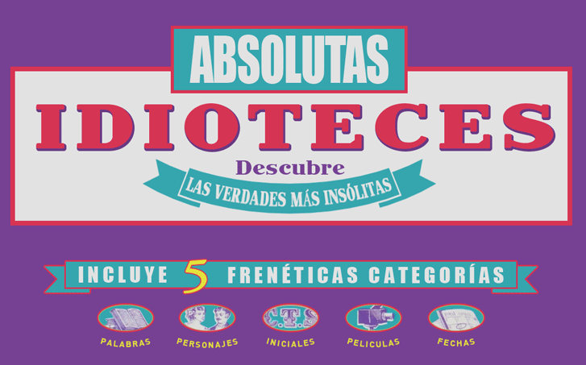

|

EMPEZAR
|
ABSOLUTAS IDIOTECES no es un juego que ponga a prueba tus conocimientos. De hecho, no se espera contestar la respuesta correcta de ninguna de las preguntas que hay en el juego.
El objetivo principal es responder de la manera más seria-absurda, lógica-irracional que se te ocurra, marcándote un farol y dejando perplejos al resto de jugadores.
Los puntos se conceden por confundir a los demás jugadores al igual que por elegir la real y a menudo increíble respuesta.
1.- Se elige a un CHARLATÁN entre los jugadores. El CHARLATÁN comienza la partida, coge una tarjeta y elige una de las cinco categorías que hay en cada tarjeta.
CATEGORIAS:
2.- El CHARLATÁN leerá en voz alta la pregunta que ha elegido. A continuación, los jugadores la escribirán en su hoja (el CHARLATÁN deberá vigilar que nadie vea la respuesta que aparece en la tarjeta).
3.- Cada jugador, excepto el CHARLATÁN, contestará la pregunta en su hoja, intentando despistar al resto de los jugadores, aunque la respuesta sea muy disparatada.
Puedes ser todo lo serio o ilógico que tú quieras.
4.- Mientras el resto de los jugadores contestan la pregunta, el CHARLATÁN copia la respuesta correcta en su hoja.
5.- Cada jugador entrega su tarjeta al CHARLATÁN.
6.- El CHARLATÁN mira todas las respuestas, se asegura de que se entiendan con claridad y las mezcla con la respuesta correcta (la que aparece en la tarjeta y que ha escrito él mismo).
Una por una el CHARLATÁN las va leyendo en voz alta (deberá tener cuidado cuando lea las respuestas, para no revelar cual es la auténtica, por el tono de voz, o bien por los gestos que pueda hacer).
7.- Después de que los jugadores dejen de reírse, el CHARLATÁN leerá por segunda vez todas las respuesta en voz alta. En algunas ocasiones es necesario leerlas hasta tres veces. Ningún jugador deberá revelar su respuesta gritando "¡es la mía!" o haciendo cualquier gesto.
8.- Siguiendo el sentido de las agujas del reloj a partir del CHARLATÁN, cada jugador intentará adivinar que respuesta le ha parecido la correcta diciéndoselo uno por uno al CHARLATÁN.
9.- Después de que todos los jugadores hayan dado su opinión. El CHARLATÁN revelará la respuesta correcta. Las puntuaciones de cada jugador serán sumadas y anotadas en la hoja de puntuaciones.
10.- El jugador situado a la izquierda del CHARLATÁN será el NUEVO CHARLATÁN, y el juego continúa...
1 PUNTO - Cada jugador obtiene un punto por cada voto que ha recibido del resto de los jugadores.
2 PUNTOS - Para cada jugador que en la votación haya acertado cual era la respuesta correcta.
3 PUNTOS - Le corresponden al CHARLATÁN si ninguno de los jugadores ha adivinado la respuesta correcta.
3 PUNTOS - Son concedidos al jugador que más se haya acercado a la respuesta correcta. Si se considera que nadie se ha acercado a ésta, no se conceden en este turno.
En el tablero original hay 27 casillas, por tanto el primero en llegar a 27 es el ganador, con una diferencia de al menos 2 puntos con el anterior.
Si el CHARLATÁN recibe de un jugador una contestación muy parecida a la respuesta correcta, no deberá leer en voz alta la respuesta del jugador con las del resto de los participantes. El CHARLATÁN separará esta respuesta y automáticamente le concederá 3 puntos y leerá la respuesta cuando la jugada haya finalizado. Se seguirá jugando como siempre (pero con una respuesta menos), y el jugador que escribió la respuesta no participará en la votación.
NOTA: Si el CHARLATÁN recibe mas de una definición muy parecida a la respuesta correcta, la jugada queda anulada y el CHARLATÁN elige otra tarjeta. Sin embargo, a cada jugador que se haya aproximado a la respuesta correcta se le concederá los 3 puntos
Cuando se juega con 4 personas o menos, una variación del juego podría ser que el CHARLATÁN contestara la pregunta, además de incluir la contestación correcccta (por supuesto, ésta se mezclaría con las anteriores posteriormente). Esta opción da al juego la oportunidad de que el CHARLATÁN juegue con todos y existan más respuesta a elegir. En este caso, entre todos concederán los 3 puntos a aquel que más se haya acercado a la respuesta auténtica.
LAS RESPUESTAS QUE APARECEN EN LAS TARJETAS DE ABSOLUTAS IDIOTECES SON AUTORIDAD FINAL DE ESTE JUEGO.
La selección de las respuestas de ABSOLUTAS IDIOTECES ha sido reconocida al menos por dos fuentes de referencia fiables.
Por cierto, un jguador puede utilizar como truco o farol, votarse a sí mismo pero nunca recibirá ningún punto por este voto.
Los creadores de este juego no se hacen responsables de que una partida de ABSOLUTAS IDIOTECES acabe convirtiéndose en una "desmadrada idiotez" o en un "absoluto desmadre".
Este juego ha sido fabricado y distribuido por POPULAR DE JUGUETES S.L
Adaptado a versión web móvil por Eduardo Hidalgo [Github]